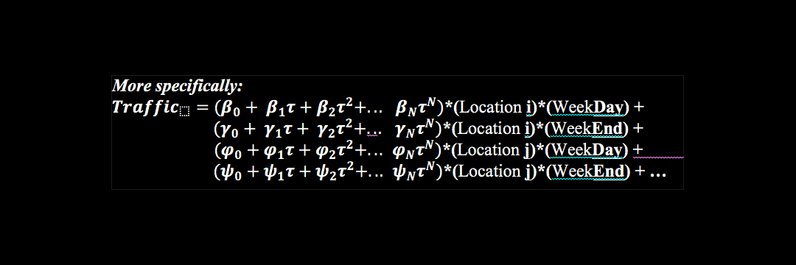

Regression Model
Polynomial Regression
To address the
nonlinearity,
mean-differences, and
heteroskdasticity between
different locations in our prediction model, we choose a
polynomial GLM regression. We
choose time of day to be the explanatory variable, and interact this with (1) location and (2)
a
weekday or
weekend dummy. These choices give us the following model form:

Where:
- Traffic is normalized as the # of cars per minute / road capacity per minute
-
τ is the hour of the day (0 ≤ τ ≥ 24)
-
(Location i) is a dummy ∈ (0,1) that takes value 1 if the observation is for Location i.
-
WeekDay/Weekend is a dummy ∈ (0,1)
As such, our prediction function has a number of terms equal to the number of
polynomial terms we select (0-based including a constant) * the number of locations * 2
(for our weekend/weekday dummy).
Initial GLM Regression Algorithm Parallelization:
Following the analysis above, our regression model is over 60,000 terms long (i.e. we need to
solve for 60,000+ regression coefficients). However, we can solve for each metaterm *(Location
i)*(WeekDay) separately. In other words, we can solve each metaterm of the following form
independently from others:
Traffic(Locationi, WeekDAY=1) = (Β0 + Β1τ + Β2τ2 + ... + ΒNτN)*(Locationi)*(WeekDAY)
Because all regressions of this type are independent from one another, they are embarrassingly parallel.
Our final traffic model is simply the sum of the outputs of each of roughly independent regression.